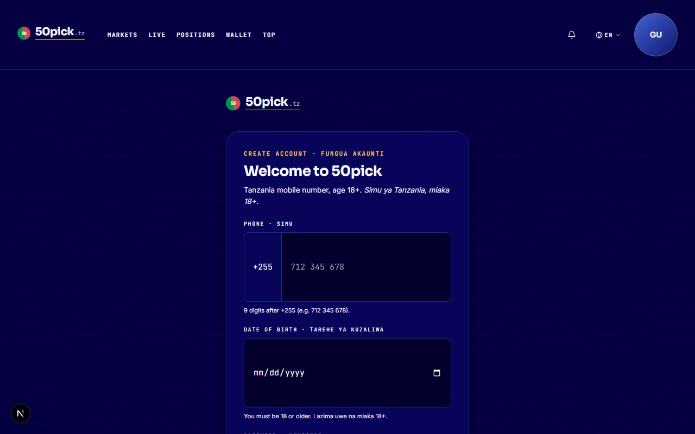
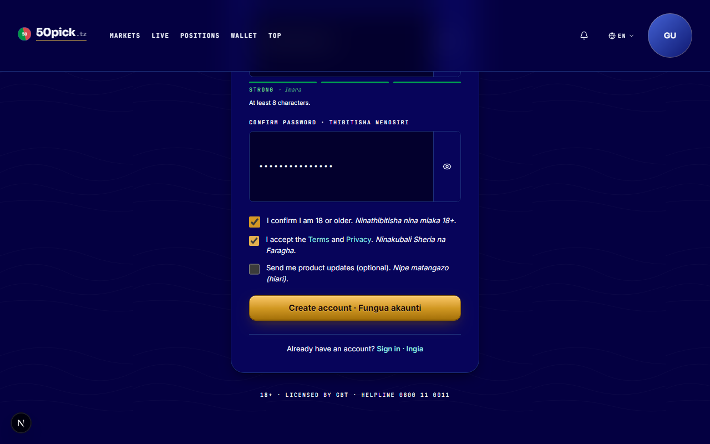
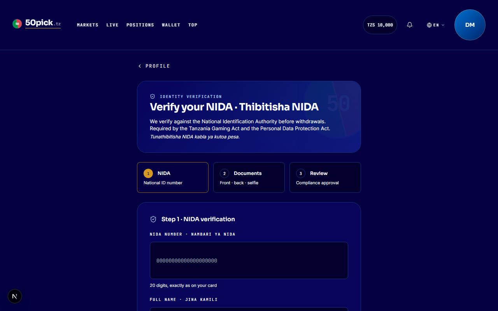
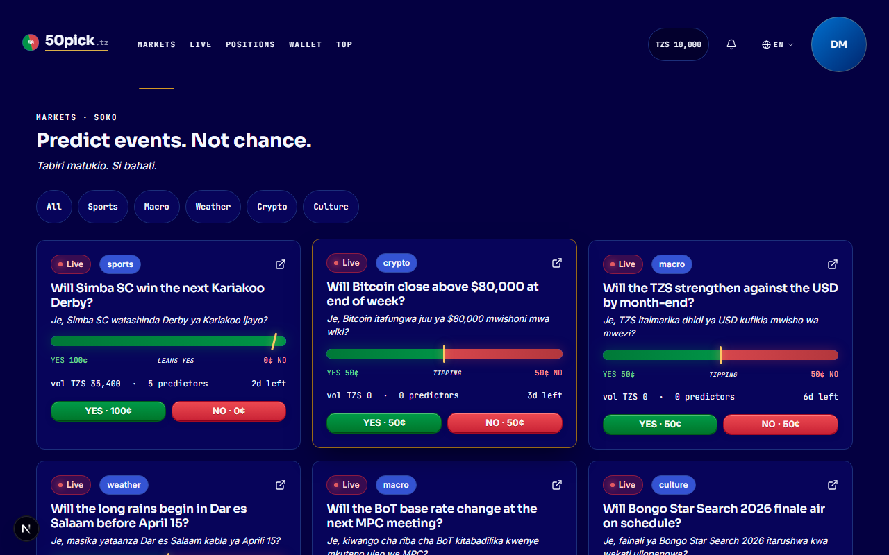
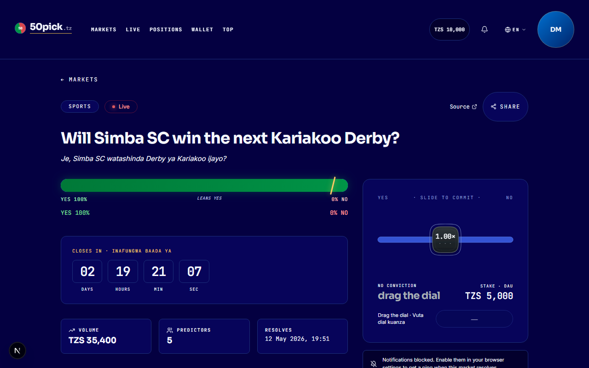
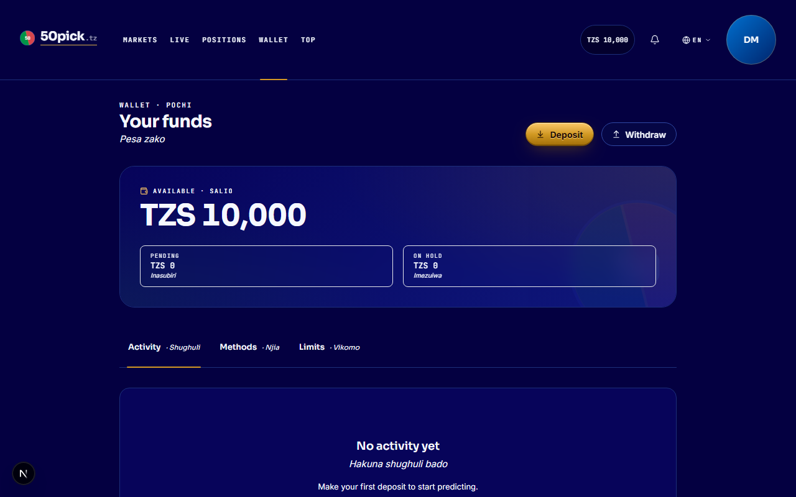
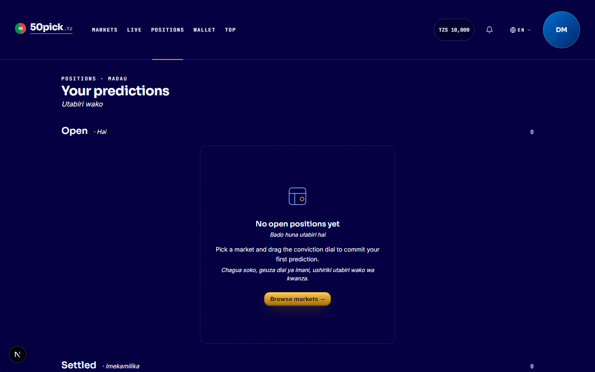
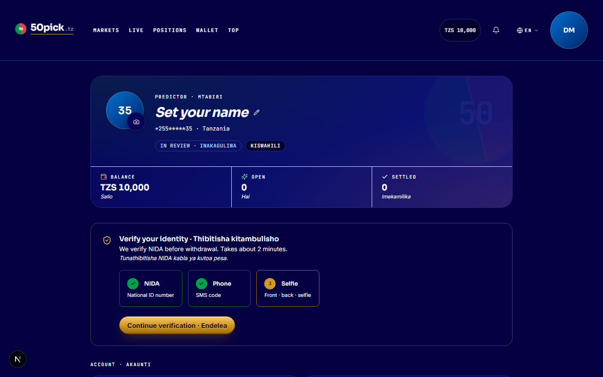
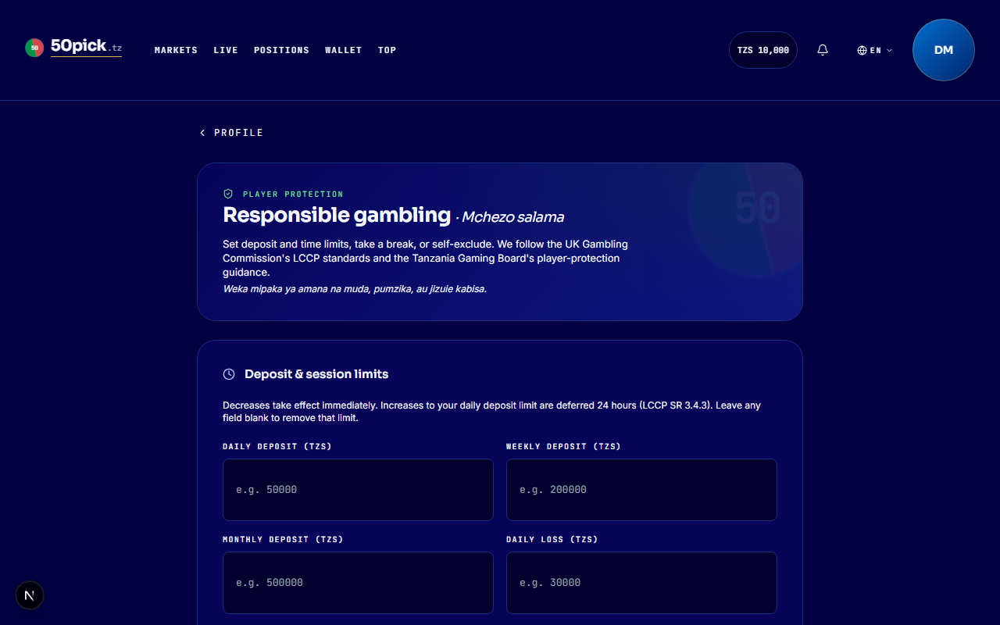

User manual · Players
A short, screenshot-led walk-through of every screen you'll touch as a player. Sign up. Place a bet. See your wallet. Take a break when you need to.

Sign-up
Open 50pick.tz, tap "Create account". Phone number (digits only — letters are stripped automatically), strong password (≥ 8 chars), date of birth.
Andika tarakimu tu — alama nyingine zinaondolewa.
Confirm you're 18+ and accept the Terms + Privacy notice. The third box (product updates) is optional.
The strength meter under the password field shows when it's Strong · Imara. Common passwords are refused server-side.

Form ready to submit

Verify identity
After Create account, you land on the verify-identity screen. NIDA national-ID + a selfie. Reviewed within hours.
You can browse and place bets immediately, but withdrawals only unlock after KYC is approved.

Markets
Markets are real-world questions with a YES or NO answer — football, weather, macro, crypto, culture. The bar shows where the pool is leaning.
Drag right for YES, left for NO. The further you push, the bigger your stake. Projection updates live.
Tap Place bet. A confirmation pops up with a 5-second locked-in price. Tap Confirm to submit.

Market detail
When the market resolves, every losing stake flows into the pool. Winners share that pool in proportion to their own stakes. The platform takes a transparent fixed margin off the resolved volume — shown on every payout. Hakuna utata wa bei iliyofichwa.

Wallet
Balance, deposits, withdrawals. The TZS pill in the top bar (next to your avatar) is the same number — tap it any time.
Withdrawals require KYC approval. The AML notice appears on transactions over the threshold.
Open bets and resolved bets, in one list. Each card shows the market, your side (YES or NO), the stake, and the projected payout if you win.
You'll get an inbox notification when a market resolves — clicking it takes you straight to the position.

Positions
Deposits via mobile money settle to your wallet within seconds. Withdrawals require a verified KYC and run through a short integrity check before payout. Large transfers may be paused for a brief AML review — you'll see a notice in the wallet, and the funds remain visible the whole time.
Each resolved card shows the official outcome, the side you took, your stake, the platform margin, and the payout (or loss). The numbers add up — every line is shown.
Hakuna kinachofichwa.

Profile
Display name, KYC status, language, region, the limits you've set on yourself, your active sessions.
Sign out from the avatar menu in the top-right — a confirmation dialog ensures a misclick doesn't sign you out mid-flow.
Set deposit limits (daily / weekly / monthly), session limits, take a break (1 h / 24 h / 1 wk), or self-exclude (24 h through permanent).
Self-exclusion cannot be reversed by you until the period ends. That's the whole point.

Responsible gambling